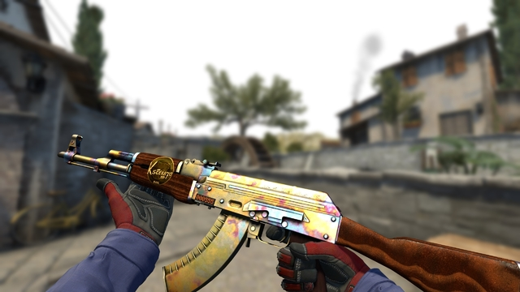
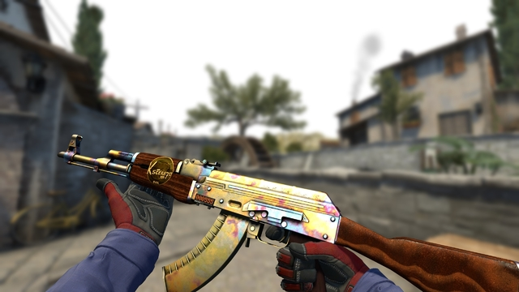

CS:GO é o 3° jogo da franquia Counter-Strike que surgiu de um mod do Half-Life chamado CS 1.6, franquia que foi comprada pela Valve Corporation anos depois, hoje o CS:GO ainda conta com milhões de players simultâneos mesmo depois de pouco mais de 10 anos de lançamento.
Em 2014, 2 anos depois que o jogo foi lançado, surgiram no game as Skins (Peles) que são basicamente desenhos ou revestimentos para as armas do jogo, com elas o jogo além de deixar o seu jogo mais bonito pode valer dinheiro. Há skins que ultrapassam valores de mais de 1 milhão de reais, como exemplo a
 
